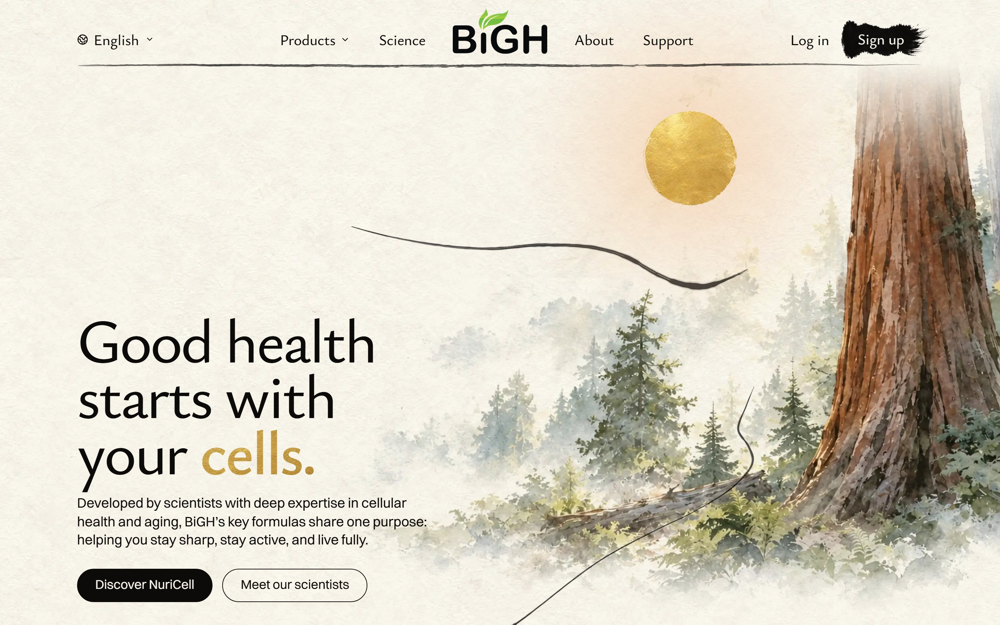
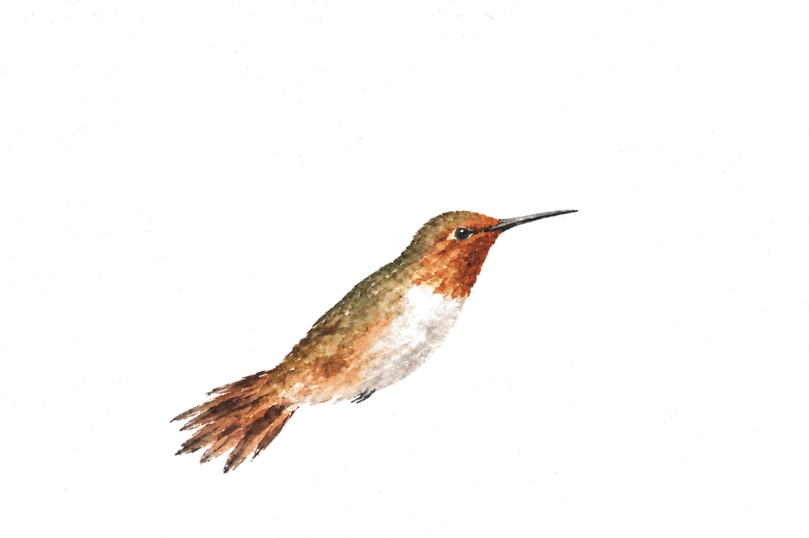
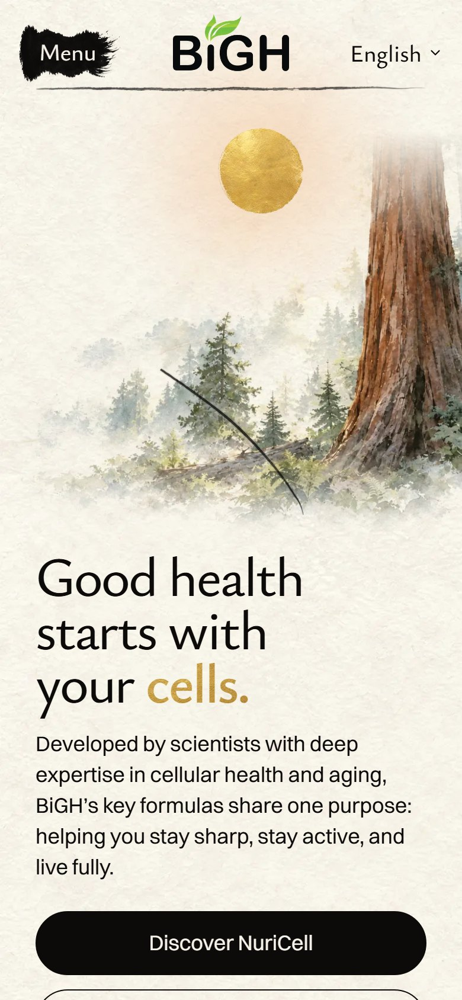
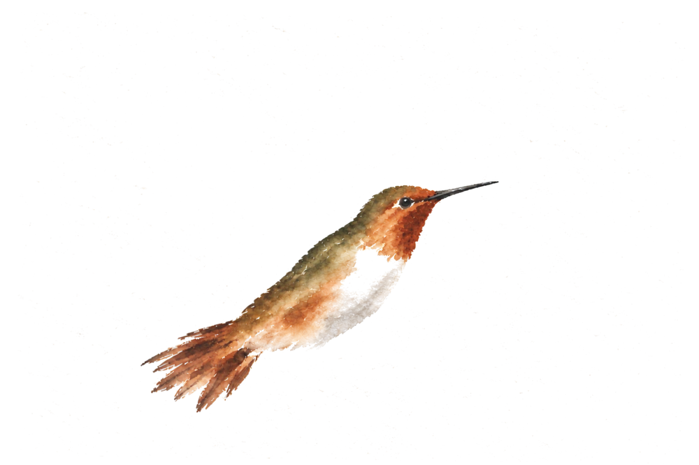
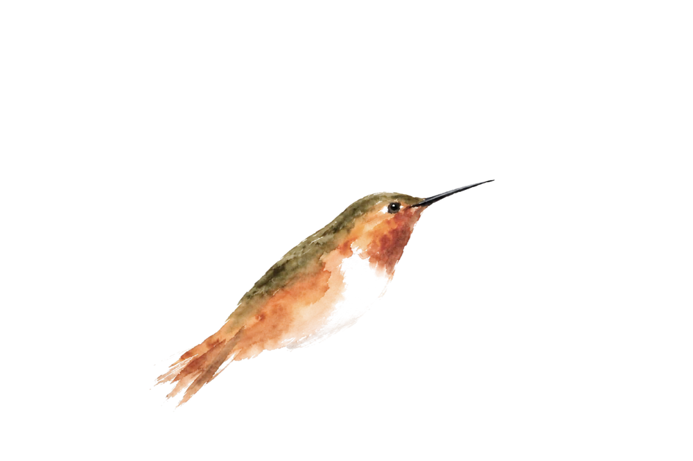

<title>Hummingbird Looks</title>
<meta name="claude:viewport-fit-sides" content="cover">
<link rel="preconnect" href="https://fonts.googleapis.com">
<link rel="preconnect" href="https://fonts.gstatic.com" crossorigin>
<link rel="stylesheet" href="https://fonts.googleapis.com/css2?family=Ysabeau:wght@500;650&display=swap">
<style>
  /* Layout: one column; each look is a close-up, then the laptop and phone screens. The bird in
     each is the live homepage's bird box, its wings beating as they would on the site. */
  :root {
    --paper: #f6f1e7;
    --sheet: #fbf8f2;
    --ink: #1d1b18;
    --ink-soft: #5d574e;
    --rule: #ddd4c4;
    --gold: #a77c25;
    --pick: #2f4a3a;
    --title: "Ysabeau", "Palatino Linotype", Palatino, Georgia, serif;
    --body: system-ui, -apple-system, "Segoe UI", Roboto, sans-serif;
  }
  @media (prefers-color-scheme: dark) {
    :root:not([data-theme="light"]) {
      --paper: #1b1a17; --sheet: #24221e; --ink: #f1ece2; --ink-soft: #b9b0a2;
      --rule: #3a3630; --gold: #d6aa52; --pick: #9cc3a8; color-scheme: dark;
    }
  }
  :root[data-theme="dark"] {
    --paper: #1b1a17; --sheet: #24221e; --ink: #f1ece2; --ink-soft: #b9b0a2;
    --rule: #3a3630; --gold: #d6aa52; --pick: #9cc3a8; color-scheme: dark;
  }
  body {
    background: var(--paper);
    color: var(--ink);
    font: 17px/1.55 var(--body);
    padding-left: max(16px, env(safe-area-inset-left, 0px));
    padding-right: max(16px, env(safe-area-inset-right, 0px));
  }
  main { max-width: 1100px; margin: 0 auto; padding-block: 40px 72px; display: grid; gap: 52px; }
  h1, h2 { font-family: var(--title); font-weight: 650; text-wrap: balance; margin: 0; letter-spacing: -0.01em; }
  h1 { font-size: clamp(34px, 6vw, 52px); line-height: 1.05; }
  h2 { font-size: clamp(26px, 4vw, 34px); line-height: 1.1; }
  p { margin: 0; max-width: 62ch; }
  .intro { display: grid; gap: 12px; }
  .intro p { color: var(--ink-soft); font-size: 18px; }
  .choice { display: grid; gap: 14px; padding-top: 26px; border-top: 1px solid var(--rule); }
  .head { display: flex; flex-wrap: wrap; align-items: baseline; gap: 10px 16px; }
  .letter { font-family: var(--title); font-size: clamp(44px, 7vw, 60px); line-height: 0.8; color: var(--gold); font-weight: 650; }
  .score { font: 600 15px/1 var(--body); font-variant-numeric: tabular-nums; padding: 7px 11px; border: 1px solid var(--rule); border-radius: 999px; color: var(--ink-soft); }
  .tag { font: 600 13px/1 var(--body); letter-spacing: 0.06em; text-transform: uppercase; color: var(--paper); background: var(--pick); padding: 7px 10px; border-radius: 999px; }
  .what { font-size: 18px; }
  .note { color: var(--ink-soft); }
  .shots { display: grid; grid-template-columns: 3fr 1fr; gap: 12px; align-items: start; }
  .view-close { grid-column: 1 / -1; width: min(100%, 680px); }
  figure { margin: 0; display: grid; gap: 6px; min-width: 0; }
  figcaption { font-size: 13px; color: var(--ink-soft); letter-spacing: 0.02em; }

  /* A shot of the live page, cut to the view, the bird laid back in its own box. */
  .scene { position: relative; overflow: hidden; border-radius: 6px; border: 1px solid var(--rule); background: #f4efe4; }
  .shot { position: absolute; max-width: none; height: auto; display: block; }
  .bird {
    position: absolute;
    transform-origin: 62% 60%;
    animation: ride 13s ease-in-out infinite alternate, pitch 21s ease-in-out -3s infinite alternate;
  }
  .body { position: absolute; inset: 0; width: 100%; height: 100%; display: block; }
  .wing {
    position: absolute;
    background-size: 600% 100%;
    background-repeat: no-repeat;
    animation: beat 0.1s steps(6) infinite;
  }
  @keyframes beat { from { background-position: 0 0; } to { background-position: 120% 0; } }
  @keyframes ride { from { translate: -0.15% 0.9%; } to { translate: 0.15% -0.9%; } }
  @keyframes pitch { from { rotate: 0.3deg; } to { rotate: -0.45deg; } }

  @media (max-width: 720px) {
    body { font-size: 16px; }
    main { gap: 40px; padding-block: 24px 56px; }
    .shots { grid-template-columns: 1fr; }
    .view-phone { width: min(100%, 300px); justify-self: center; }
  }
</style>

<main>
  <header class="intro">
    <h1>The hummingbird</h1>
    <p>Allen's hummingbird three ways, from today's brushwork to a loose painting, each laid on the live homepage. On all three the wings never stop: about ten beats a second, blurred the way your eye sees a real hummingbird.</p>
    <p>For visitors whose phone asks for less motion, the wings would rest in the raised pose. Nothing on the live site has changed.</p>
  </header>

  <section class="choice" aria-labelledby="allens-name">
    <div class="head">
      <span class="letter">A</span>
      <h2 id="allens-name">Allen's, as shown before</h2>
      <span class="score">8 / 10</span>
      
    </div>
    <p class="what">The copper bird from the last page: fine brushwork, every feather speckled in.</p>
    <p class="note">Pretty, but it reads more like a field-guide picture than a painting.</p>
    <div class="shots">
      <figure class="view view-close">
        <div class="scene" style="aspect-ratio:400/250" role="img" aria-label="Allen's, as shown before on the homepage (up close, laptop)">
          
          <div class="bird" style="left:6.2617%;top:7.3563%;width:79.4219%;height:84.3750%">
            <span class="wing" style="left:19.571%;top:8.993%;width:44.603%;height:75.171%;background-image:url(allens-far.webp)"></span>
            
            <span class="wing" style="left:19.571%;top:8.993%;width:44.603%;height:75.171%;background-image:url(allens-near.webp)"></span>
          </div>
        </div>
        <figcaption>Up close, laptop</figcaption>
      </figure>
      <figure class="view view-desktop">
        <div class="scene" style="aspect-ratio:1440/900" role="img" aria-label="Allen's, as shown before on the homepage (laptop, 1440 wide)">
          
          <div class="bird" style="left:24.6560%;top:17.5990%;width:22.0616%;height:23.4375%">
            <span class="wing" style="left:19.571%;top:8.993%;width:44.603%;height:75.171%;background-image:url(allens-far.webp)"></span>
            
            <span class="wing" style="left:19.571%;top:8.993%;width:44.603%;height:75.171%;background-image:url(allens-near.webp)"></span>
          </div>
        </div>
        <figcaption>Laptop, 1440 wide</figcaption>
      </figure>
      <figure class="view view-phone">
        <div class="scene" style="aspect-ratio:390/844" role="img" aria-label="Allen's, as shown before on the homepage (phone)">
          
          <div class="bird" style="left:4.5994%;top:21.4603%;width:63.3974%;height:19.4535%">
            <span class="wing" style="left:19.571%;top:8.993%;width:44.603%;height:75.171%;background-image:url(allens-far.webp)"></span>
            
            <span class="wing" style="left:19.571%;top:8.993%;width:44.603%;height:75.171%;background-image:url(allens-near.webp)"></span>
          </div>
        </div>
        <figcaption>Phone</figcaption>
      </figure>
    </div>
  </section>

  <section class="choice" aria-labelledby="allens-loose-name">
    <div class="head">
      <span class="letter">B</span>
      <h2 id="allens-loose-name">A little looser</h2>
      <span class="score">8 / 10</span>
      
    </div>
    <p class="what">Softer washes on the breast, wings of quick dry strokes.</p>
    <p class="note">A step toward a painting, but up close the body still has the same fine speckle.</p>
    <div class="shots">
      <figure class="view view-close">
        <div class="scene" style="aspect-ratio:400/250" role="img" aria-label="A little looser on the homepage (up close, laptop)">
          
          <div class="bird" style="left:6.2617%;top:7.3563%;width:79.4219%;height:84.3750%">
            <span class="wing" style="left:18.661%;top:10.655%;width:45.904%;height:74.389%;background-image:url(allens-loose-far.webp)"></span>
            
            <span class="wing" style="left:18.661%;top:10.655%;width:45.904%;height:74.389%;background-image:url(allens-loose-near.webp)"></span>
          </div>
        </div>
        <figcaption>Up close, laptop</figcaption>
      </figure>
      <figure class="view view-desktop">
        <div class="scene" style="aspect-ratio:1440/900" role="img" aria-label="A little looser on the homepage (laptop, 1440 wide)">
          
          <div class="bird" style="left:24.6560%;top:17.5990%;width:22.0616%;height:23.4375%">
            <span class="wing" style="left:18.661%;top:10.655%;width:45.904%;height:74.389%;background-image:url(allens-loose-far.webp)"></span>
            
            <span class="wing" style="left:18.661%;top:10.655%;width:45.904%;height:74.389%;background-image:url(allens-loose-near.webp)"></span>
          </div>
        </div>
        <figcaption>Laptop, 1440 wide</figcaption>
      </figure>
      <figure class="view view-phone">
        <div class="scene" style="aspect-ratio:390/844" role="img" aria-label="A little looser on the homepage (phone)">
          
          <div class="bird" style="left:4.5994%;top:21.4603%;width:63.3974%;height:19.4535%">
            <span class="wing" style="left:18.661%;top:10.655%;width:45.904%;height:74.389%;background-image:url(allens-loose-far.webp)"></span>
            
            <span class="wing" style="left:18.661%;top:10.655%;width:45.904%;height:74.389%;background-image:url(allens-loose-near.webp)"></span>
          </div>
        </div>
        <figcaption>Phone</figcaption>
      </figure>
    </div>
  </section>

  <section class="choice" aria-labelledby="allens-few-name">
    <div class="head">
      <span class="letter">C</span>
      <h2 id="allens-few-name">Painted in a few strokes</h2>
      <span class="score">9 / 10</span>
      <span class="tag">My pick</span>
    </div>
    <p class="what">A fresh painting: a few wet washes of copper and green that bleed into each other, wings of pale grey strokes, bare paper for the breast, the beak one dry stroke of grey ink.</p>
    <p class="note">Clearly a painting, in the hand of the old crane. Its orange came out loud, so it is calmed toward the redwood's copper and the gold sun still leads.</p>
    <div class="shots">
      <figure class="view view-close">
        <div class="scene" style="aspect-ratio:400/250" role="img" aria-label="Painted in a few strokes on the homepage (up close, laptop)">
          
          <div class="bird" style="left:6.2617%;top:7.3563%;width:79.4219%;height:84.3750%">
            <span class="wing" style="left:16.19%;top:14.174%;width:45.644%;height:76.931%;background-image:url(allens-few-far.webp)"></span>
            
            <span class="wing" style="left:16.19%;top:14.174%;width:45.644%;height:76.931%;background-image:url(allens-few-near.webp)"></span>
          </div>
        </div>
        <figcaption>Up close, laptop</figcaption>
      </figure>
      <figure class="view view-desktop">
        <div class="scene" style="aspect-ratio:1440/900" role="img" aria-label="Painted in a few strokes on the homepage (laptop, 1440 wide)">
          
          <div class="bird" style="left:24.6560%;top:17.5990%;width:22.0616%;height:23.4375%">
            <span class="wing" style="left:16.19%;top:14.174%;width:45.644%;height:76.931%;background-image:url(allens-few-far.webp)"></span>
            
            <span class="wing" style="left:16.19%;top:14.174%;width:45.644%;height:76.931%;background-image:url(allens-few-near.webp)"></span>
          </div>
        </div>
        <figcaption>Laptop, 1440 wide</figcaption>
      </figure>
      <figure class="view view-phone">
        <div class="scene" style="aspect-ratio:390/844" role="img" aria-label="Painted in a few strokes on the homepage (phone)">
          
          <div class="bird" style="left:4.5994%;top:21.4603%;width:63.3974%;height:19.4535%">
            <span class="wing" style="left:16.19%;top:14.174%;width:45.644%;height:76.931%;background-image:url(allens-few-far.webp)"></span>
            
            <span class="wing" style="left:16.19%;top:14.174%;width:45.644%;height:76.931%;background-image:url(allens-few-near.webp)"></span>
          </div>
        </div>
        <figcaption>Phone</figcaption>
      </figure>
    </div>
  </section>
</main>
